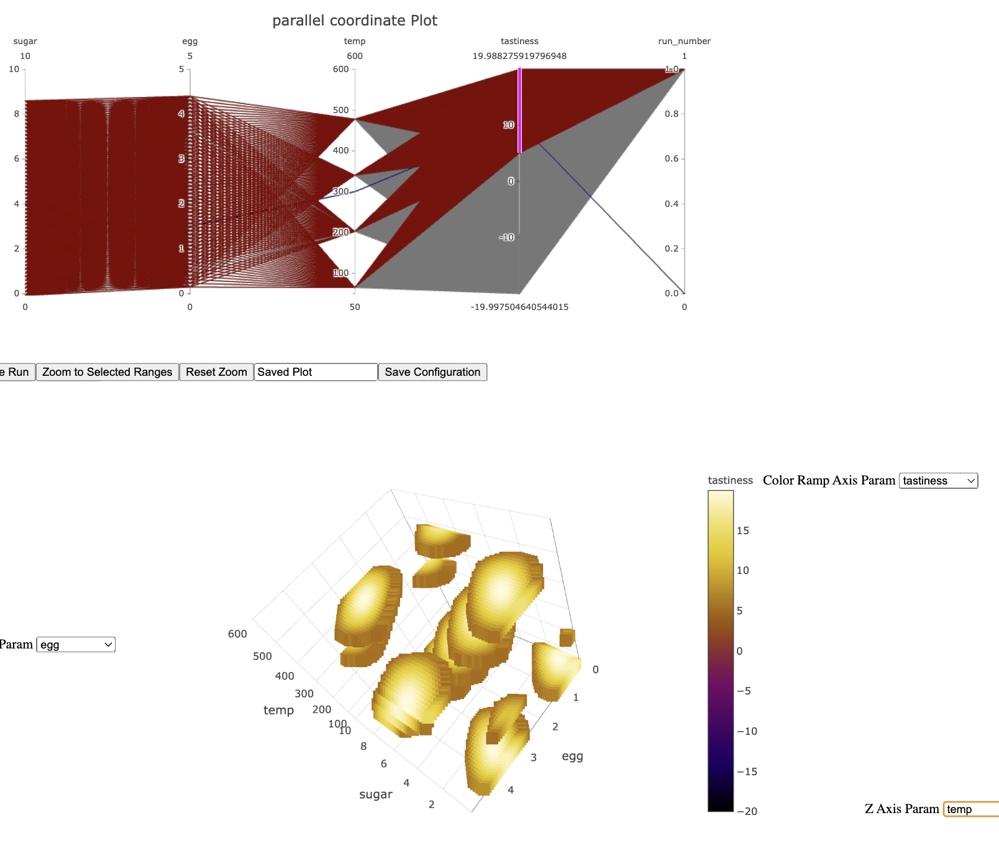
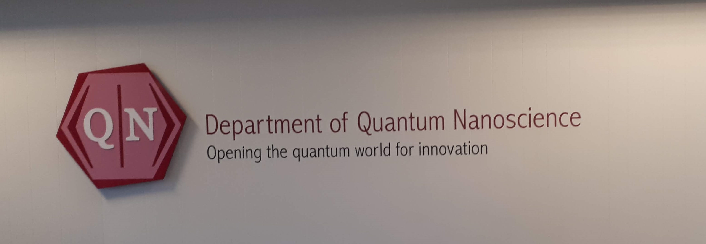
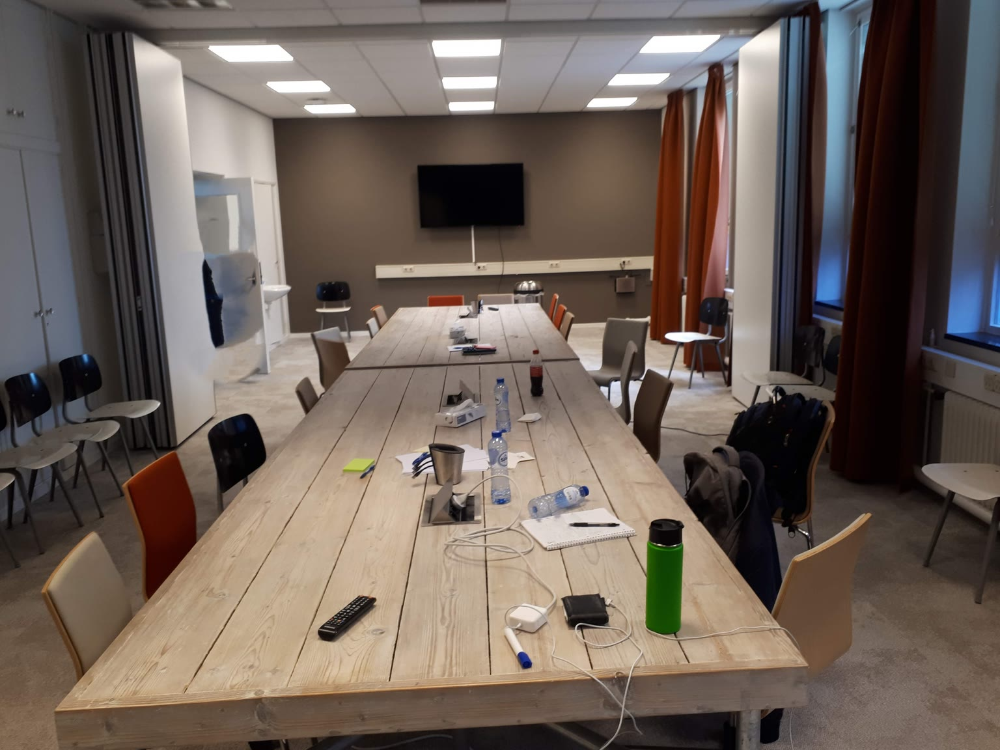
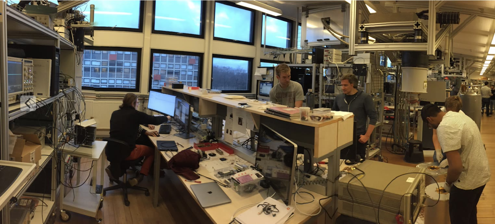
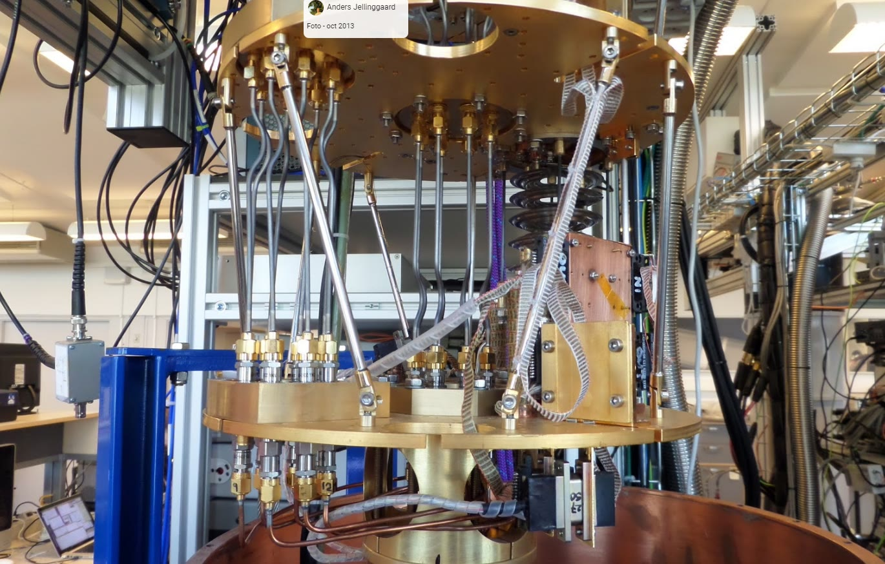
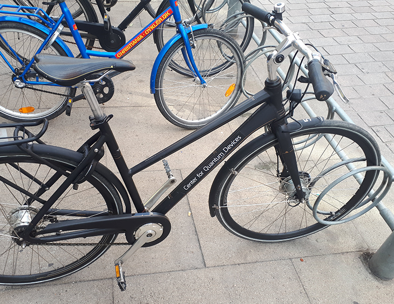
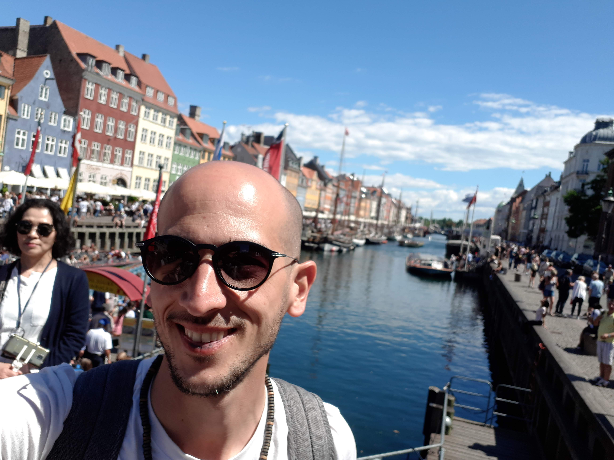

My Experience Visualizing Quantum Experiments

Alejandro Panza | Rosario | Argentina

In 2018 I started working on a web page that would allow quantum laboratories partnered with Microsoft to share experimental results and insights. I got a rare opportunity to glance at hundreds of mysterious and very classified plots of quantum experiments. I also watched a dense, two-hour video of researchers endlessly tweaking different parameters, and I took notes.
Some weeks later, I had an idea for a tool that would allow those scientists to visualize the plots in context and visually explore a multi-dimensional space of experimental results.
After some struggle, I had permission to present the prototype in an all-hands meeting at Delft University in the Netherlands. Scientists from different labs around the globe were there, along with some top Microsoft execs.

I presented my prototype as if I was a cook navigating through an endless space of ingredient combinations to get the perfect cookie formula. The idea caught on. The researchers were excited about it, and it was decided my team should start building it right away.

After that amazing moment, and thanks to some good friends, I was invited to visit the Copenhagen Center for Quantum Devices and experience firsthand the cutting-edge experiments happening there.

I sat alongside the researchers, watched them work, and asked questions about how they were visualizing their data. Getting to know their workflow was ideal to build a better tool for them.

I also pedaled through beautiful Copenhagen streets on the bike they graciously gave me, made good friends, and met amazing people.

We worked on it for a year and had great people collaborating on the project. We had to deal with some interesting technical challenges related to the amount of data points we needed to display and trying not to stray too far from the strict guidelines for plots on scientific publications.
The tool was used, but not as much as I had hoped, and in hindsight, my vision for the prototype was never fully realized. I learned a lot in the process, including how hard it is to keep a steady course when multiple stakeholders have different needs.
Overall it was a fantastic experience, and it paved the way for collaborating on other R&D projects for GenUI and Microsoft, like the Living Display Project or DNA Storage Project.
